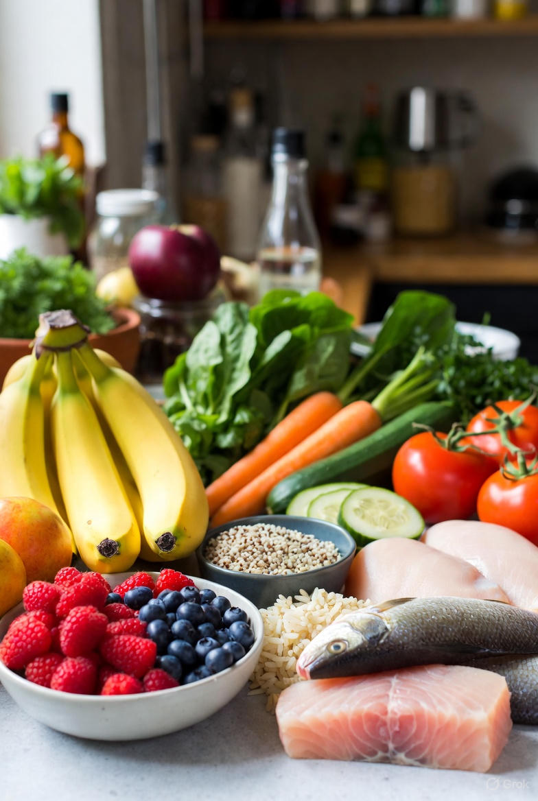
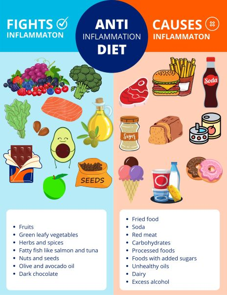
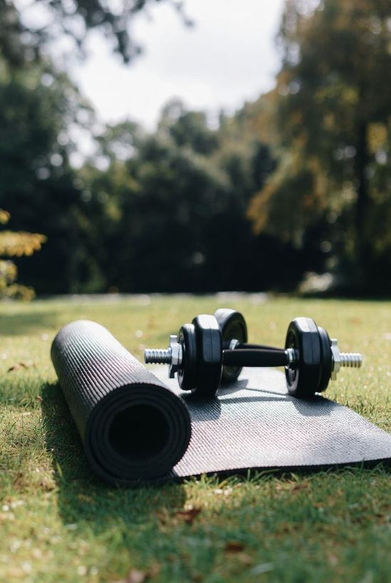
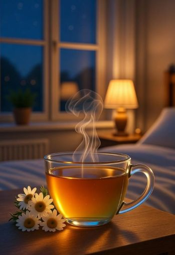

Lifestyle
Lifestyle changes have been one of the most powerful tools in managing my endometriosis — not as a cure, but as a way to reduce inflammation, support hormone balance, and improve daily quality of life.
Food, in particular, became a way to care for my body instead of constantly fighting it.
There is no single “endometriosis diet” that works for everyone. Research and lived experience both suggest that anti-inflammatory, hormone-supportive nutrition can make a meaningful difference for many women.
Endometriosis-supportive way of eating
Rather than strict rules, I think of this as a supportive framework — something you adapt to your body, culture, and lifestyle.
Foods that often support women with endometriosis include:
• Leafy greens (spinach, kale, arugula)
• Colorful vegetables and berries
• Fatty fish rich in omega-3s (salmon, sardines, mackerel)
• Olive oil, nuts, and seeds
• Anti-inflammatory spices like turmeric and ginger
• Whole grains and fiber-rich foods that support gut and estrogen metabolism

These foods help calm inflammation, support the gut microbiome, and assist the body in processing hormones more efficiently.
Foods that may worsen symptoms
Many women notice symptom flares with certain foods — especially those that promote inflammation or hormone imbalance. Common triggers may include:
• Highly processed foods
• Refined sugar
• Excess caffeine
• Alcohol
• Red or processed meat
• Trans fats
This doesn’t mean these foods are “bad” or forbidden. It simply means paying attention to how your body responds and adjusting with compassion, not restriction.
Specific dietary approaches often explored
Some women find relief by experimenting with structured approaches, such as:
• Anti-inflammatory diet
• Mediterranean-style diet
• Low FODMAP (if digestive symptoms are prominent)
• Gluten or dairy reduction (especially in cases of sensitivity)

These approaches can be helpful starting points — not lifelong obligations. Working with a nutritionist experienced in endometriosis can help personalize them safely.
For me, the biggest shift wasn’t eliminating certain foods — it was changing my relationship with eating. I stopped aiming for perfection and started aiming for consistency and kindness.
Food should support healing, not create stress or guilt. Small, sustainable changes matter far more than strict rules.
For women with endometriosis, movement is not about pushing through pain or forcing the body to perform. It’s about supporting circulation, reducing inflammation, calming the nervous system, and reconnecting with your body in a way that feels safe.
Gentle, regular movement can help by reducing pain and stiffness, improve blood flow in the pelvic area and reduce the inflammation, support digestion and lymphatic drainage, boost endorphins and emotional wellbeing.
Choosing the right kind of exercise
Low-impact, mindful forms of exercise are the most supportive for endometriosis, especially when symptoms are active.
Many women find relief through:
• Walking, especially in nature
• Gentle yoga (restorative, yin, or trauma-informed styles)
• Swimming or water-based movement
• Pilates focused on stability and breath
• Light strength training with proper rest

These forms of movement support the body without overwhelming it. Always listen to your body.
High-intensity or high-impact workouts can sometimes worsen symptoms, especially during flare-ups or certain phases of the menstrual cycle.
Some days movement may look like:
• Stretching for five minutes
• A slow walk
• Lying on the floor and breathing
All of this counts.
Consistency over intensity
Gentle consistency is far more healing than intensity. Small, regular movements build trust with the body and create long-term support without triggering flares.
This is not about burning calories or “fixing” your body. It’s about caring for your body and mental health.
Sleep is such an important — and often painful — topic for women with endometriosis. Many already feel guilty or frustrated about not sleeping “well enough,” so this section will help you with a realistic sleep routine.
Rest as a form of healing
When you live with endometriosis, sleep is not always easy. Pain can wake you in the middle of the night, hormones can disrupt your rhythm, and exhaustion can linger no matter how many hours you spend in bed. Still, sleep remains one of the most powerful tools your body has for healing.
Quality sleep supports hormone regulation, immune function, nervous system balance, and pain management. When sleep is disrupted, inflammation can increase — often making symptoms feel louder and harder to manage the next day.
Creating gentle sleep support
Rather than chasing “perfect sleep,” the goal is to create conditions that invite rest, even on difficult nights.
Many women find support through:
• A consistent sleep and wake schedule
• A cool, dark, and quiet sleeping space
• A wind-down routine that signals safety to the body
• Reducing screen exposure in the hour before bed
• Gentle stretching or breathing before sleep
• Small rituals can help the nervous system shift from alert to rest.
Supporting deeper rest naturally
Some natural supports may help the body relax and settle into deeper sleep, such as:
• Magnesium (often used for muscle relaxation and nervous system support, it can also be used to reduce pelvic pain)
• Herbal teas like chamomile or lemon balm
• Lavender essential oil or calming scents
• Warm baths or heat before bedtime
Sleep and women menstrual cycle
Hormonal fluctuations throughout the cycle can affect sleep quality. Tracking your cycle may help you anticipate nights when sleep is more difficult and plan extra support, rest, or gentleness during those times.
On harder nights, it’s okay to adjust expectations. Rest doesn’t always mean sleeping — sometimes it means lying still, breathing softly, or allowing the body to pause.
Struggling with sleep is not a personal failure. Your body is doing its best under challenging conditions. Supporting sleep is about kindness, patience, and consistency, not pressure.
✨ Rest is undoubtly your best medicine!

Stress management is core to a holistic approach, and this section is an opportunity to gently validate how hard this illness is — without making anyone feel responsible for their symptoms.
Supporting the nervous system
Living with endometriosis is stressful — emotionally, physically, and mentally. The pain is unpredictable, the fatigue can be overwhelming, and the feeling of not being understood can weigh heavily over time. Stress is not the cause of endometriosis, but it can amplify symptoms and make the body feel constantly on edge.
When stress becomes chronic, cortisol levels remain elevated. This can increase inflammation, disrupt hormone balance, and worsen pain and fatigue. Supporting the nervous system is therefore not optional — it is an essential part of living well with endometriosis.
Gentle daily practices that can help
Stress management doesn’t require long meditation sessions or dramatic lifestyle changes. Often, it’s the small, consistent practices that bring the most relief.
Many women find support through:
• Slow, deep breathing or nervous-system–focused exercises
• Meditation or mindfulness apps
• Journaling thoughts and emotions
• Spending time in nature or sunlight
• Gentle movement such as stretching, yoga, or walking
These practices help signal safety to the body, allowing muscles to relax and inflammation to soften over time.
Emotional support
Chronic pain affects mental health deeply. Anxiety, low mood, frustration, and grief are common — and completely understandable. Seeking psychological support is not a sign that the pain is “in your head.” It is a way to care for the mind–body connection that endometriosis so strongly affects.
A therapist familiar with chronic illness can help process emotions, reduce stress responses, and rebuild trust in your body.
Define your boundaries
Learning to set boundaries is one of the hardest — and most healing — steps. Saying no, resting without guilt, asking for help, and protecting your energy are not indulgences. They are acts of self-preservation.
Self-care is not about bubble baths or perfection. It’s about listening honestly to what your body needs and honoring it — even when it’s uncomfortable to do so. You don’t need to eliminate stress to heal. You just need enough moments of safety and rest for your body to recover.
Carol